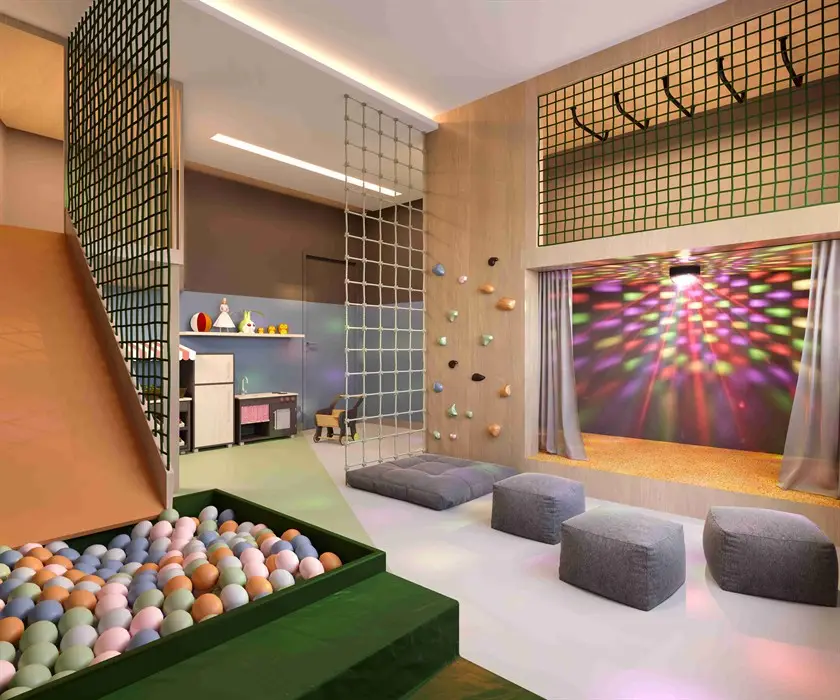

Imagens


Galeria
Imagens ilustrativas, de caráter artístico, conforme material da incorporadora.

Fantástico apartamento na Tijuca
Rua Dona Delfina. Mais do que um endereço, um estilo de vida próprio na Tijuca.
Up Gardens e apartamentos com 2 e 3 quartos, de 70,53 m2 a 183,74 m2, com vaga.
Coberturas duplex com 3 e 4 quartos, com duas suítes, de 162,80 m2 a 249,18 m2, com 2 vagas.
Lazer completo em dois níveis, indoor e outdoor: piscina, sauna, terraço gourmet com
churrasqueira e forno de pizza, pet care, fitness, coworking, brinquedoteca, games e
Metragens, tipologias e disponibilidade conforme material oficial da incorporadora, sujeitos a alteração sem aviso. Valores e condições confirmados na tabela vigente. Seleção e atendimento: Paulo Cotrim, CRECI-RJ 77677-F.
Imagens ilustrativas, de caráter artístico, conforme material da incorporadora.